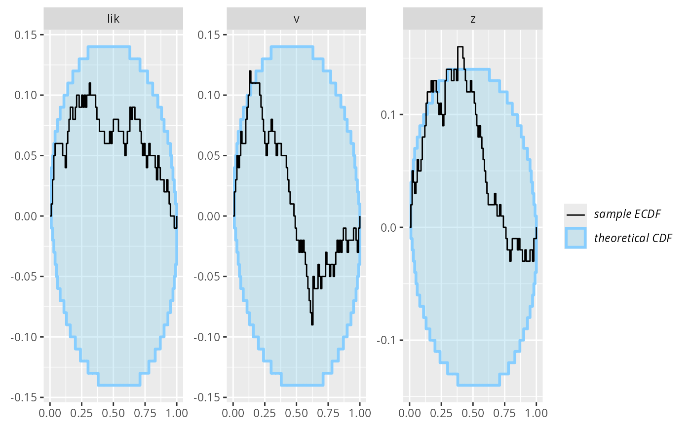
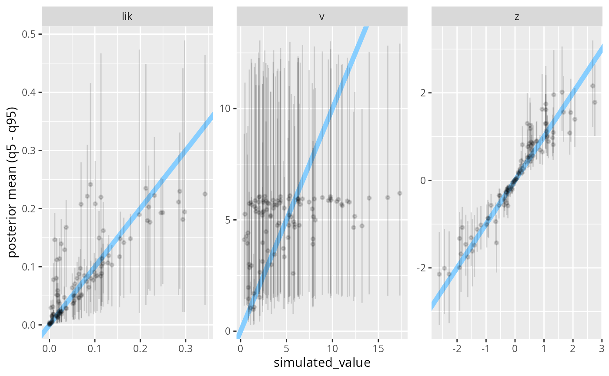

If the function returns a draws_matrix object, no other
work is necessary to make it work with SBC.
SBC_backend_function(
func,
generated_arg = "generated",
cores_arg = NULL,
args = list(),
iid_draws = FALSE,
default_thin_ranks = 10
)the function that will be called in SBC_fit()
name of the argument of func that will receive the
generated data. If NULL, data is not passed to the function.
name of the argument of func that will receive the number
of cores to use. If NULL, information on cores is not passed.
a (named) list of additional arguments to the function
does the result of the backend have independent identically
distribute draws (will be returned by SBC_backend_iid_draws() for this backend).
suggested thinning if user does not specify any (will be returned by SBC_backend_default_thin_ranks() for this backend).
# Generate t-distributed variables as a ratio of standard normal (z)
# and transformed chi-squared (v) variables.
# What is the conditional distribution of z if t is observed?
# See https://math.stackexchange.com/a/5085538/423833 for derivation that it
# is generalized gamma distribution. Here we test this is correct.
N_sims <- 100
df <- 5
z <- rnorm(N_sims)
v <- rchisq(N_sims, df = df)
t <- z / sqrt(v/df)
# Bundle in a dataset with extra quantities
my_data <- SBC_datasets(
variables = posterior::draws_matrix
(z = z, v = v, lik = abs(z) * dchisq(df * z^2 / t^2, df = df)),
generated = purrr::map(t, \(t) list(t = t, df = df)))
# Main workhorse function
my_post_func <- function(generated) {
df <- generated$df
t <- generated$t
gg_d <- df + 1
gg_p <- 2
gg_a <- 1/sqrt(df/(2*t^2) + 0.5)
# Transform to parametrization used by ggamma
gg_b <- gg_p
gg_k <- gg_d / gg_p
abs_z <- ggamma::rggamma(1000, gg_a, gg_b, gg_k)
v <- df * abs_z^2 / t^2
lik = abs_z * dchisq(df * abs_z^2 / t^2, df = df)
posterior::draws_matrix(z = abs_z * sign(generated$t),
v = v,
lik = lik)
}
backend <- SBC_backend_function(my_post_func, iid_draws = TRUE)
res <- compute_SBC(my_data, backend, keep_fits = FALSE)
plot_ecdf_diff(res)

plot_sim_estimated(res)
